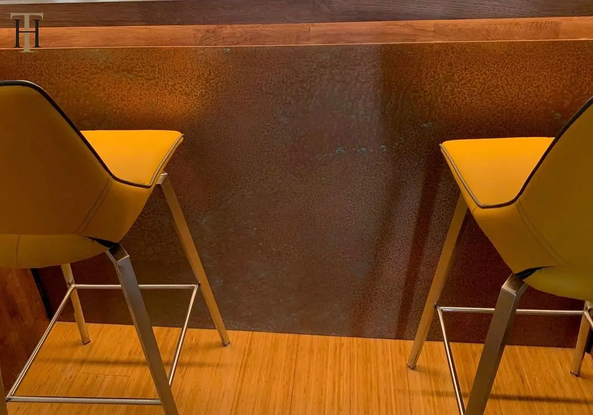
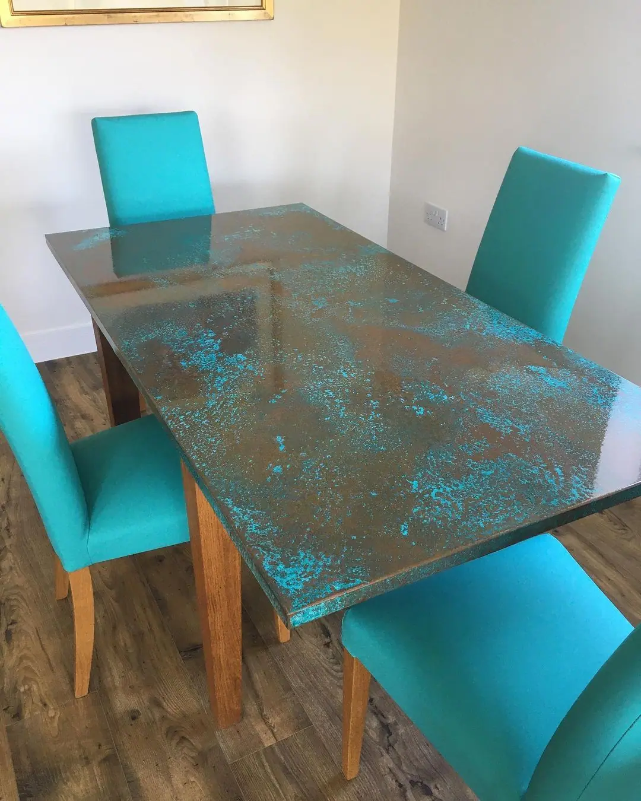

01 SplashbacksBrass · Copper · Zinc · Corten02
SplashbacksBrass · Copper · Zinc · Corten02 WorktopsBrass · Copper · Zinc03
WorktopsBrass · Copper · Zinc03 Table topsBrass · Copper · Zinc04
Table topsBrass · Copper · Zinc04 Coffee tablesBrass · Copper05
Coffee tablesBrass · Copper05 Bar topsBrass · Copper · Zinc06
Bar topsBrass · Copper · Zinc06 Wall panels and claddingAll metals07
Wall panels and claddingAll metals07 Cooker hoodsBrass · Copper08
Cooker hoodsBrass · Copper08 TilesBrass · Copper09
TilesBrass · Copper09 Bath panelsBrass · Copper10
Bath panelsBrass · Copper10 Cupboard doors and plinthsBrass · Copper11
Cupboard doors and plinthsBrass · Copper11 Stair risersBrass · Copper12
Stair risersBrass · Copper12 Signage and letteringBrass · Copper · Zinc13
Signage and letteringBrass · Copper · Zinc13 Wall art and screensAll metals14
Wall art and screensAll metals14 Brass sheetsBrass15
Brass sheetsBrass15 Zinc and steel sheetsZinc · Steel17
Zinc and steel sheetsZinc · Steel17 Kitchen productsBrass · Copper18
Kitchen productsBrass · Copper18 Door numbers and lettersBrass · Copper19
Door numbers and lettersBrass · Copper19 Laser-cut screensAll metals20
Laser-cut screensAll metals20 Garden screens and panelsAll metals21
Garden screens and panelsAll metals21 Decorative door push platesBrass · Copper22
Decorative door push platesBrass · Copper22 Dining table topsBrass · Copper · Zinc23
Dining table topsBrass · Copper · Zinc23
SplashbacksBrass · Copper · Zinc · Corten02WorktopsBrass · Copper · Zinc03Table topsBrass · Copper · Zinc04Coffee tablesBrass · Copper05Bar topsBrass · Copper · Zinc06Wall panels and claddingAll metals07Cooker hoodsBrass · Copper08TilesBrass · Copper09Bath panelsBrass · Copper10Cupboard doors and plinthsBrass · Copper11Stair risersBrass · Copper12Signage and letteringBrass · Copper · Zinc13Wall art and screensAll metals14Brass sheetsBrass15
Copper sheetsCopper16Zinc and steel sheetsZinc · Steel17Kitchen productsBrass · Copper18Door numbers and lettersBrass · Copper19Laser-cut screensAll metals20Garden screens and panelsAll metals21Decorative door push platesBrass · Copper22Dining table topsBrass · Copper · Zinc23
Patina finishing serviceYour metal, our finish
If you can dream it, we’ll make it.
Bars, balustrades, staircases, worktops, cladding and pieces that don’t have a name yet. Our designers and craftspeople work in brass, copper, zinc and steel, and alongside wood.